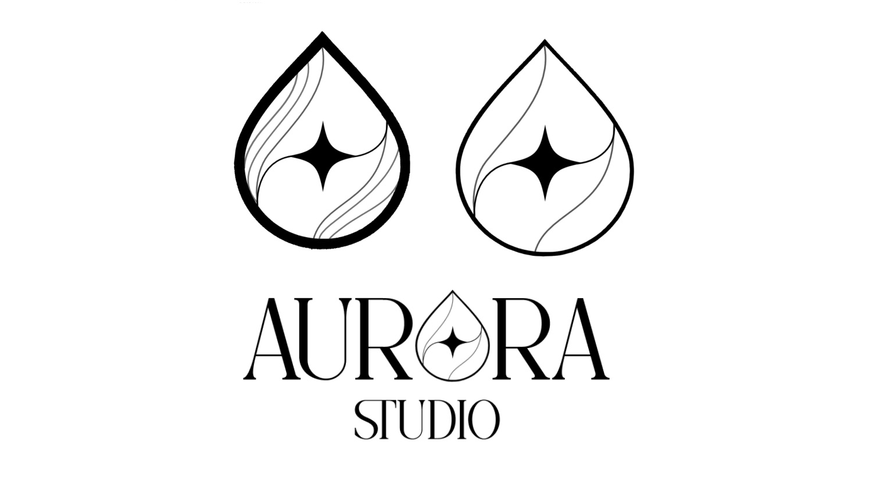
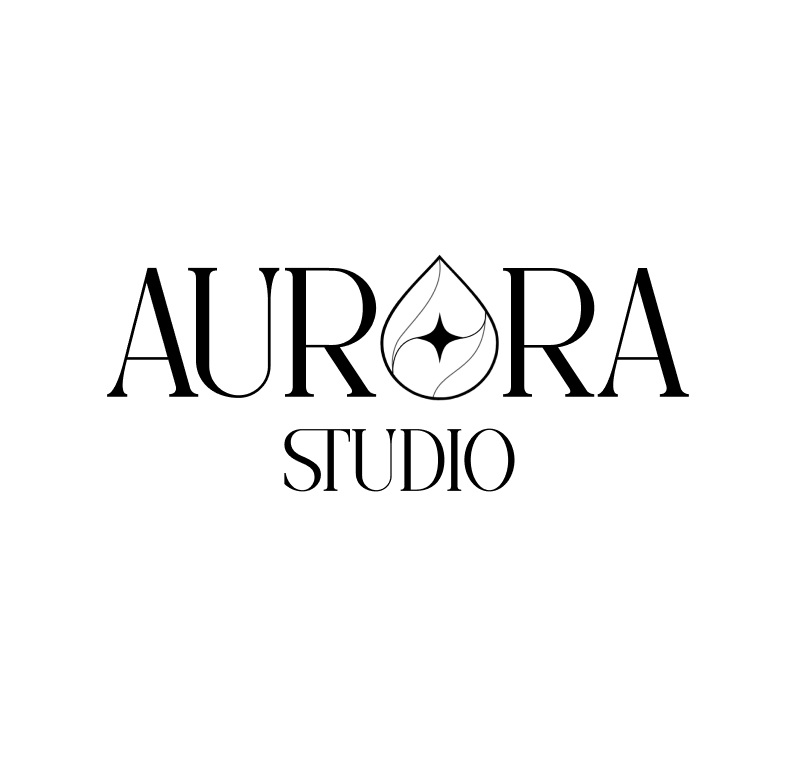
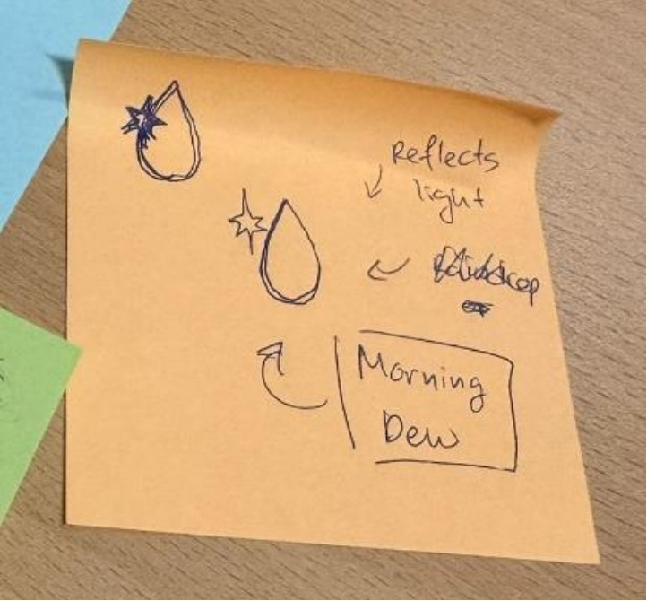
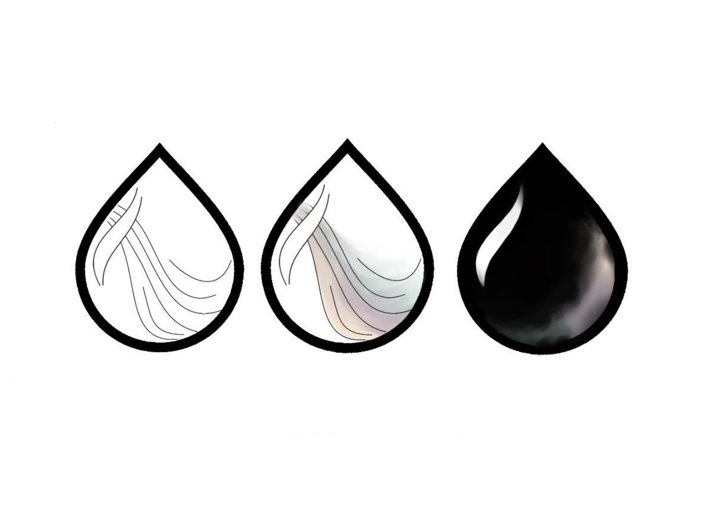
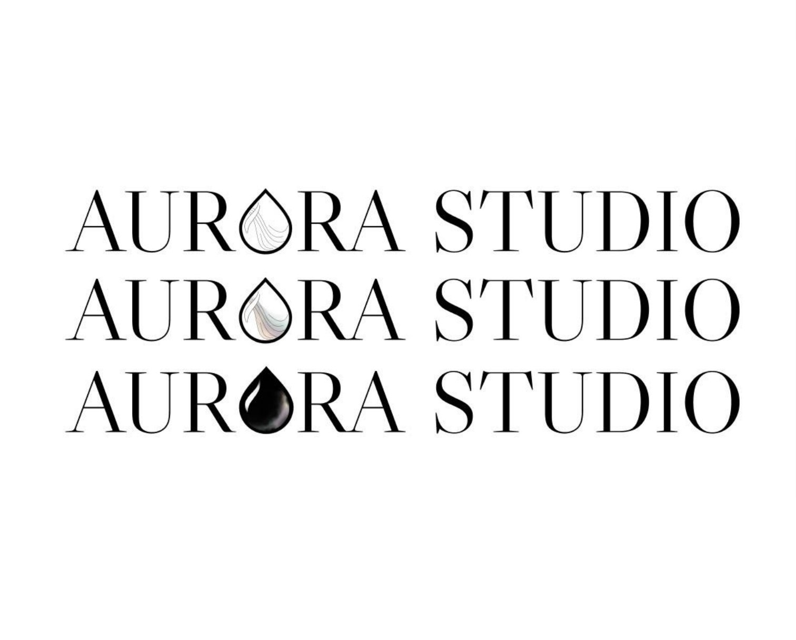
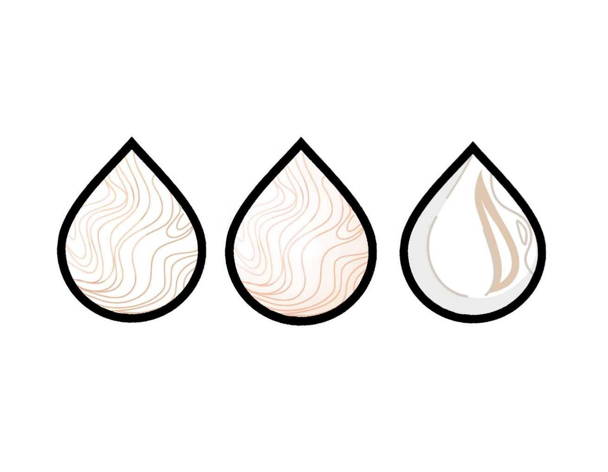
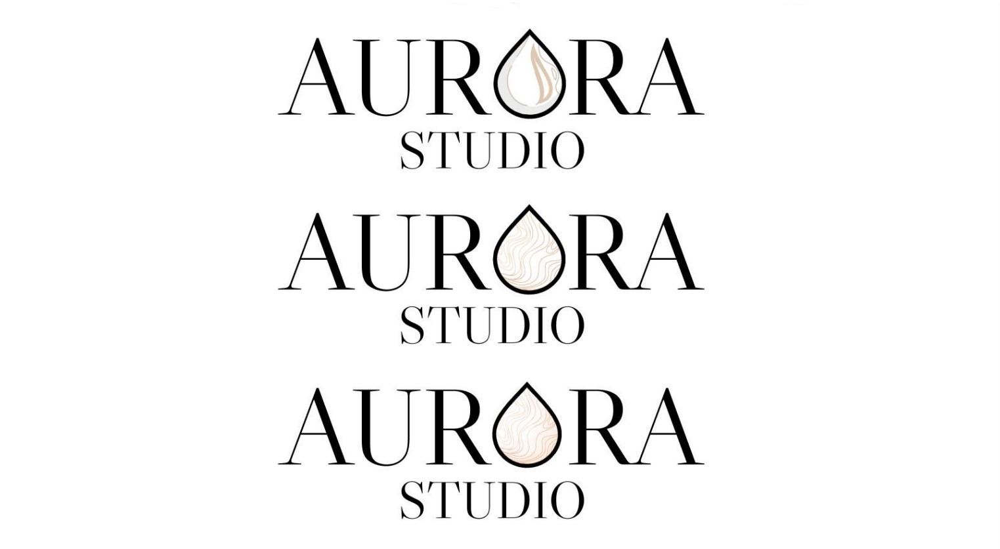

Project film







Scroll to explore
Selected project / 2024
Our team was assigned the task of establishing a studio for a UX Team of our own. Our main tasks were to create a Brand Guide, Logo, Presentation Video and a simple website within the span of a week and a half. My contributions: I took the majority of the videos for our presentation with a professional Canon camera and editted them tgether. I helped in designing our logo and contributed to the user experience research, conducting user testing with stakeholders, and promoting the studio to our target audience.







Scroll to explore